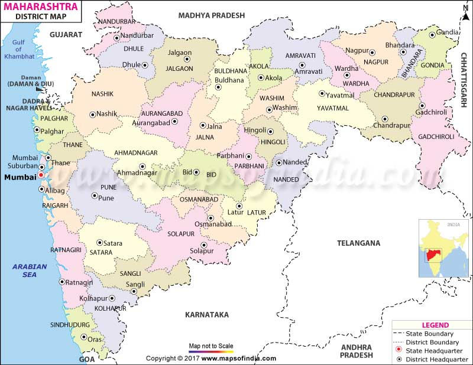

MAHARASHTRA STATE

Maharashtra is the state of medium level population. It is very important state in India. Maharashtra is the state located in India.And India is located in Asian Continent. Maharashtra is known as important state among all the city. Mumbai which is the financial capital of India is located in the Maharashtra. So it is the important state. Literacy is medium in this state. The local language is Marathi here. Pune and Mumbai are the two important cities located in this state. There are 36 district in this state and cities too. The present chief minister is Devendra Phadanvis. The Ganpati Festival is only celebrated in Maharashtra. It is the second most populas state and the third largest state by area in India.It is located in the western Peninsular region of India. Nashik is located in Maharashtra which is the 'Wine capital of India'.
People from Maharashtra is very properly known for their Mangoes.Alphonso Mango is famous from Ratnagiri. Monsoon occurs in highly proportion in this state. Pune, Nagpur, Mumbai are the main cities of Maharashtra. Agriculture is the occupation of this state. Rice is grown here in large amount.